An administrator account can do everything a staff member can, plus the work that shapes what
everyone else sees. In practice that means:
Design and publish forms — the questions parents answer, and the
staff-only fields your staff fill in.
Decide who can see what — public or private forms, which roles see which
staff-only field, and which menu items each role gets.
Manage accounts and roles — create users, reset passwords, and define what
a role may do.
Watch the plumbing — the Webhook Log shows every response Google Forms
sent, including the ones the app rejected.
This guide and the Settings Reference
Day-to-day work — forms, submissions, reports, access — is in this guide. The
twelve Settings sections are in the companion
Settings Reference, one chapter per section. Both are
printable and use the same conventions.
1.2 Signing in
Open the School Forms address and sign in with the email address and password for your
administrator account.
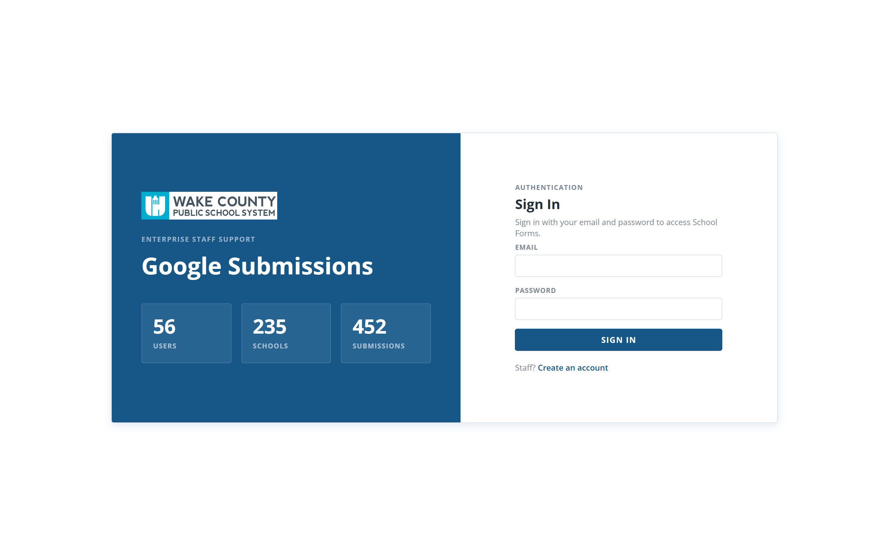
123
Figure 1 — Signing in.
Email — your administrator address.
Password — your password.
Sign In.
If the screen looks different
An administrator controls the sign-in mode in
Settings → Login Mode. If you see Organization and
Test User lists instead of the two boxes, the installation is in test mode;
if you see an amber maintenance message, sign-in is switched off. See the
Settings Reference, chapter 3.
1.3 Finding your way around
You land on Submissions. The menu is closed so your work has the full width of
the screen — click the menu button in the top-left corner.
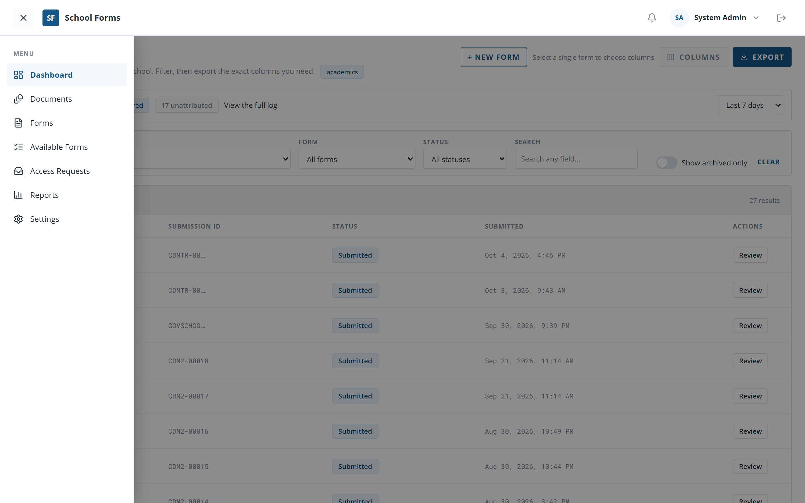
12345
Figure 2 — The administrator menu.
Menu button.
Dashboard — every submission in your organization.
Forms — the form list and the designer.
Settings — the twelve sections in the companion Settings Reference.
Your account chip — opens Change password.
Between Forms and Settings sit
Documents, Available Forms, Access Requests
and Reports; Documents appears only when enabled for your
role.
Menu items can be hidden
Forms, Available Forms, Access Requests and
Reports are each switchable per role in
Settings → Menu Settings. If a colleague cannot see one, that is a setting,
not a fault. Settings itself is always available to administrators.
2. Submissions
2.1 The dashboard
The Dashboard lists every submission across every school in your
organization.
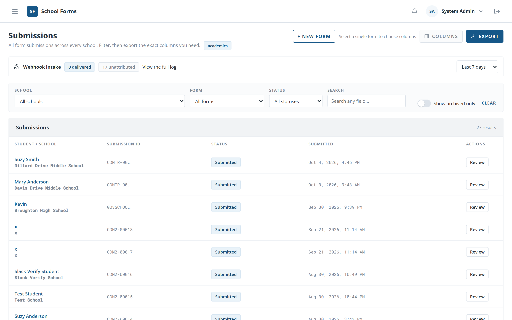
123456
Figure 3 — The submissions dashboard.
School — all schools or one.
Form — all forms or one; picking one adds its fields as columns.
Status — Submitted, In Review, Flagged, Completed.
Columns — choose which fields appear.
Export — download what you see.
Review — opens the submission. The student's name does the same.
A Search box and a Search in column
selector sit beside the three dropdowns.
2.2 Filtering and searching
Narrow the grid with the four filters in the bar. Clear resets every filter,
including the form.
Search matches any answer on the row. Use Search in to
restrict it to one column — for example, a course name in Course choice #1 only.
Picking a Form is what makes that form's fields available as columns and as
search targets.
Staff-only columns sort to the right-hand end and are tinted. You can edit them in place,
exactly as staff do.
Archived submissions are hidden by default
An archived submission disappears from this grid, from exports, from reports and from the
documents list. It is not deleted — see 2.4 for restoring it.
2.3 Exporting
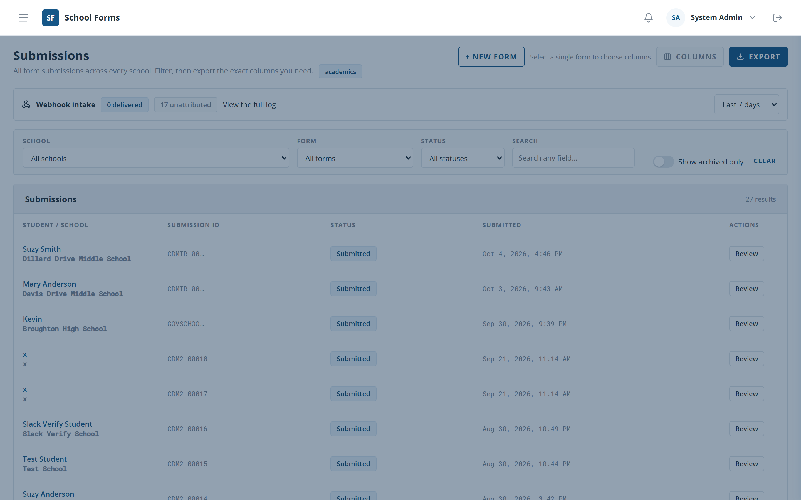
1234
Figure 4 — Exporting from the dashboard.
How many rows and columns the file will hold.
Tick the columns to include.
A preview of the first rows.
Export CSV.
The file downloads as submissions-export.csv. For Excel or PDF, or to save the
setup for next time, use Reports instead.
2.4 Reviewing and archiving a submission
Click a student's name or Review to open the submission. The page is the same
one staff use, with two additions only an administrator sees:
Delete permanently — appears on an archived submission only, and
cannot be undone. The dialog names the student and states that the generated Google Doc
itself is not deleted, only the app's link to it.
Promote to form field — on the Additional fields card, when
a Google Form asked a question that was never defined in the designer. Promoting it adds a
real field to the form and migrates every matching answer.
Everything else — Select Status, Edit for a parent's answers,
Save staff fields, Archive and Restore — works
exactly as described in the Staff Guide, Part 5.
3. Forms
3.1 The Forms list
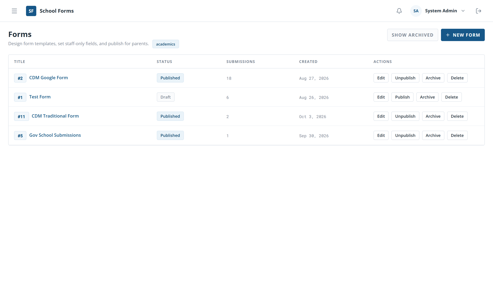
123
Figure 5 — The Forms list.
New Form — opens the create card (Figure 6).
The per-row action buttons: Design,
Publish/Unpublish,
Archive/Restore, and Delete.
The form's number and title. The number is what an Apps Script is configured with.
Delete is disabled once a form has submissions
That is deliberate: submission data is never lost to a mis-click. To retire a form that has
been used, Archive it instead — it stops accepting submissions and every
submission is kept.
3.2 Creating a form
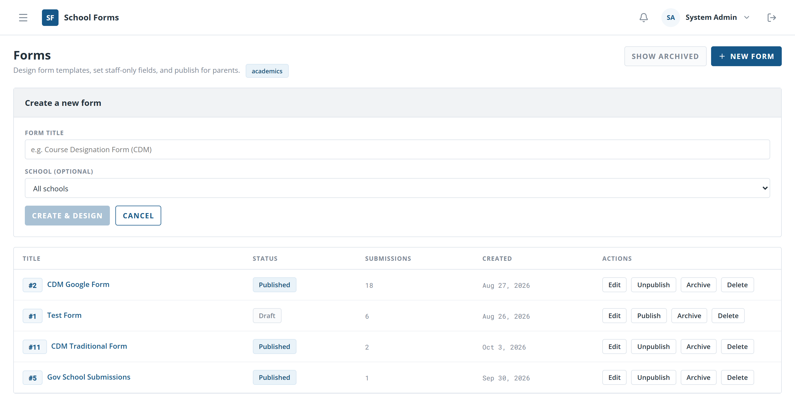
12
Figure 6 — Creating a form.
The title — for example Course Designation Form (CDM).
Create & Design saves it as a Draft and opens the designer.
The card is opened by New Form on the Forms list.
3.3 Form Details
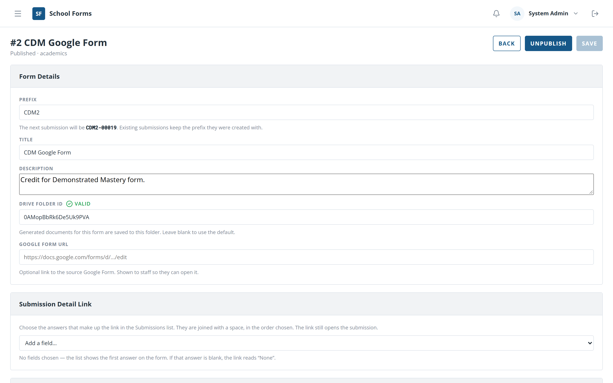
12345
Figure 7 — The Form Details card.
The Form Details card.
Title — shown to parents and staff.
Description — an optional note shown to parents.
Drive Folder ID — where generated documents are saved. A green
Valid check means the folder is reachable.
Google Form URL — an optional link shown to staff. Nothing is fetched
from it; it is information only.
Publish / Unpublish sits in the page
header, above this card.
There is no "generate fields from Google Form"
The Google Form URL is a link for staff to follow. Fields are always built by hand in the
designer. A question a Google Form asks that the designer does not define is still captured
on the submission and can be promoted later — see 2.4.
3.4 Adding fields
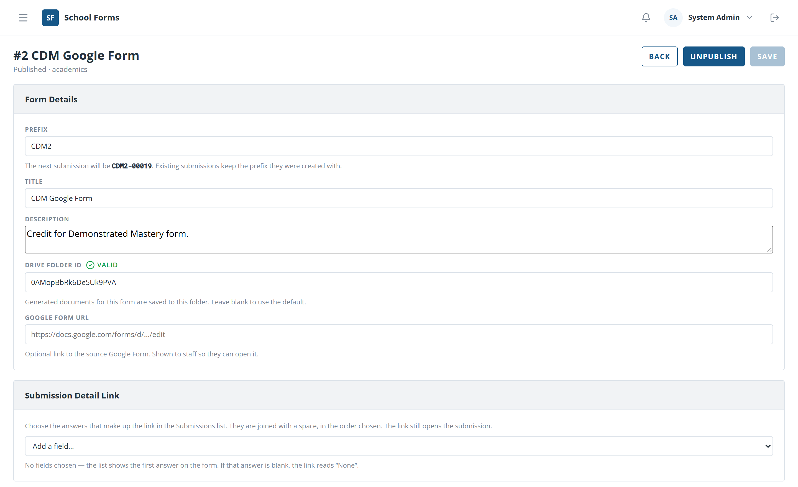
1234
Figure 8 — Building the parent-facing fields.
Form Fields — the questions parents answer.
Staff Only Fields — the tab for fields parents never see
(Figure 9).
Label — the question text.
Type — Text, Text Area, Number, Date, Email, Google Document, Select,
Radio, Checkbox or Toggle.
Each row also carries Options (comma-separated, for Select,
Radio and Checkbox only), a Required switch, arrows to reorder, and
✕ to remove. Add Form Field sits below the last row.
3.5 Staff-only fields and access
12
Figure 9 — Staff-only fields and their Access row.
The Staff Only Fields tab, with a count of how many exist.
The Access row under each field: one button per role. A filled button
(✓ Staff) means that role can see and fill the field; an outlined one
(+ Staff) means it cannot. Click to toggle.
A staff-only field has the same Label,
Type and Options as a form field. Its
Required switch is off by default, because a staff-only field is normally
filled in later rather than by the parent.
Why the Access row matters
This is how you keep a field visible to Administrators only, or to Administrators and School
Contacts but not Staff. A role created later starts with no access to existing staff-only
fields until you grant it here.
3.6 Visibility: public and private
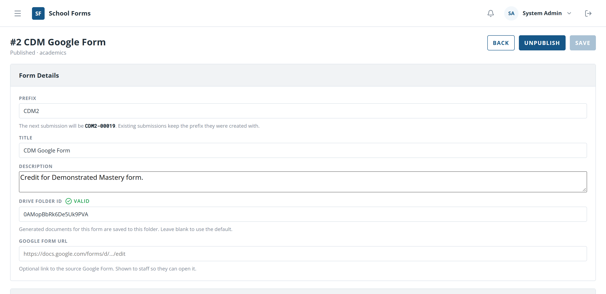
1
Figure 10 — Choosing who can open the form.
The Visibility card. It offers Public — every account
in the organization can read the form — and Private, where an account
sees it only after you grant access in Settings → Users or by approving
a request.
Changing a published form to private asks you to confirm first, because it
takes the form away from everyone who was relying on it.
3.7 Publishing and the public link
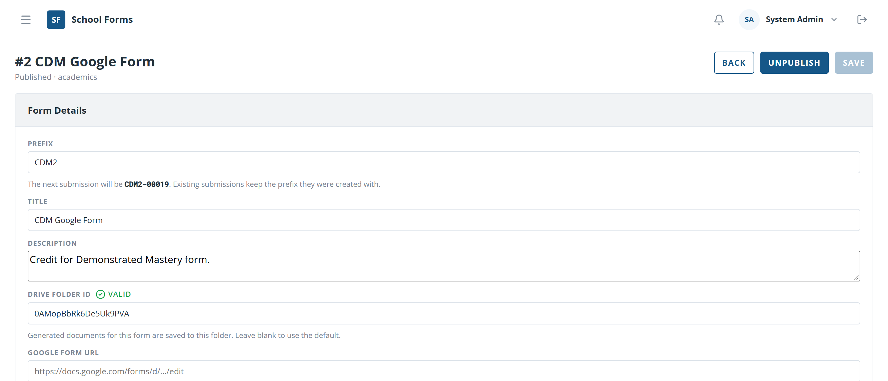
1
Figure 11 — The public link.
The Public link card, which appears at the bottom of the designer once
the form is published. It holds the address to share with parents —
/org/{organization}/forms/{form-id} — and a button to copy it. No sign-in is
required to use the link.
Unpublishing keeps existing submissions
Unpublish stops the form accepting new responses; everything already
submitted is untouched. Responses that arrive while a form is unpublished are rejected and
recorded in the Webhook Log — publishing the form again makes them
deliverable.
4. Access requests
When a form is private, an account that cannot read it can ask for access. Those requests
arrive here, and in the bell in the banner.
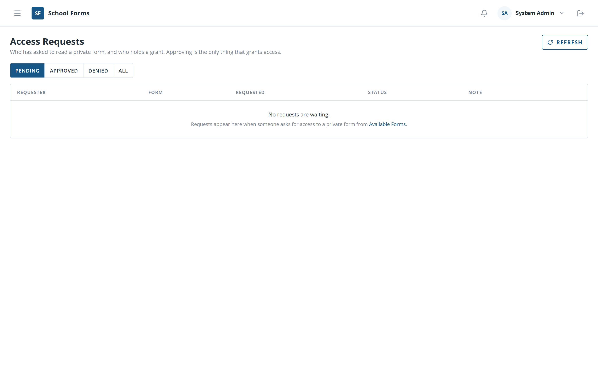
12
Figure 12 — Access requests.
The page heading, with the count of pending requests.
The decision controls on a request: approve it, or decline it with an optional reason
that the requester will see.
Each row names who asked, for which form, and when.
Approving is the same as ticking the box
An approval creates the same grant you would create by ticking the form in
Settings → Users → Edit User. Either route works; this one is just faster
when several people are waiting. A declined request stays re-requestable — the person can ask
again.
5. Reports and export
5.1 Building a report
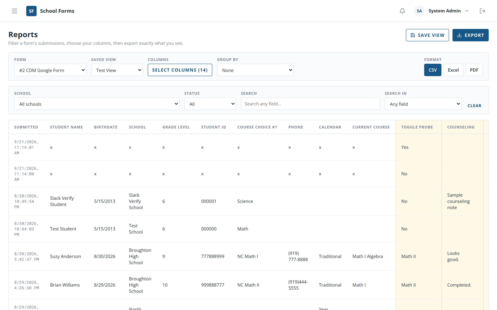
12345
Figure 13 — The Reports page.
Save View — keep the filters and columns under a name.
Export — download in the chosen format.
Form — required; the columns belong to the form you pick.
Group by; Format (CSV, Excel, PDF) sits to its right.
Below these sit Saved View, School,
Status, Search and Search in. You have a
School filter; a School Contact does not.
Pick a Form.
Narrow the rows with School, Status and
Search.
Choose columns and, optionally, a Group by.
Pick a Format and click Export.
What you see is what you get
The preview and the exported file come from the same query, so the file always matches the
screen. Saved views are private to the account that made them.
5.2 Selecting columns
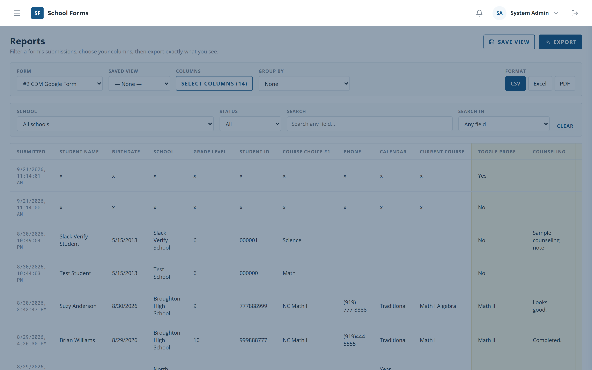
123
Figure 14 — Choosing report columns.
Tick the fields to show and export.
Staff-only fields are in the same list.
The footer counts your selection; Done closes the drawer.
6. Webhook Log
The Webhook Log is the answer to "a form looks empty — did anything actually arrive?" It lists
every response Google Forms posted to the app, including the ones it rejected.
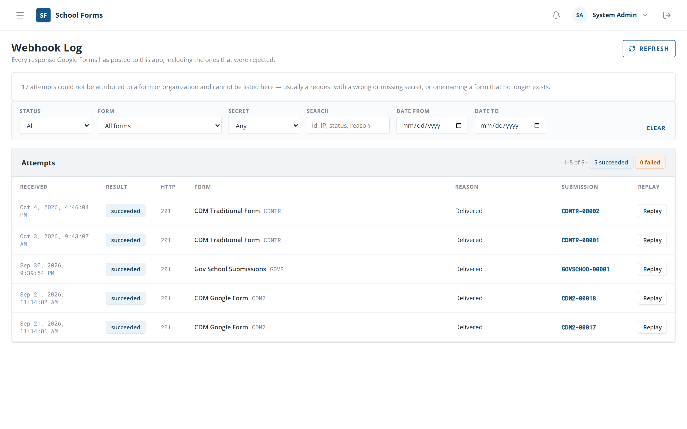
123
Figure 15 — The Webhook Log.
The Status filter — set it to Failed to see what was
rejected.
Replay re-sends a stored response through today's rules. It is greyed
out when the attempt cannot be replayed.
The Attempts table — one row per attempt, with its reason. Click a row
for the full payload.
Reason
Meaning
Replayable?
Succeeded
Accepted; a submission was created.
—
form_not_published
The form was not published when the response arrived.
Yes, once published
invalid_body
The payload was missing required keys.
No
form_not_found
The form id does not exist.
No
unauthorized
Wrong or missing secret. Logged without the payload.
No
internal_error
The server failed.
Yes
The common case
If responses stopped arriving because a form was unpublished, publish the form and click
Replay on the affected rows — or Replay all failed once a
form is selected. The stored responses are re-sent and the submissions appear.
7. Generated Documents
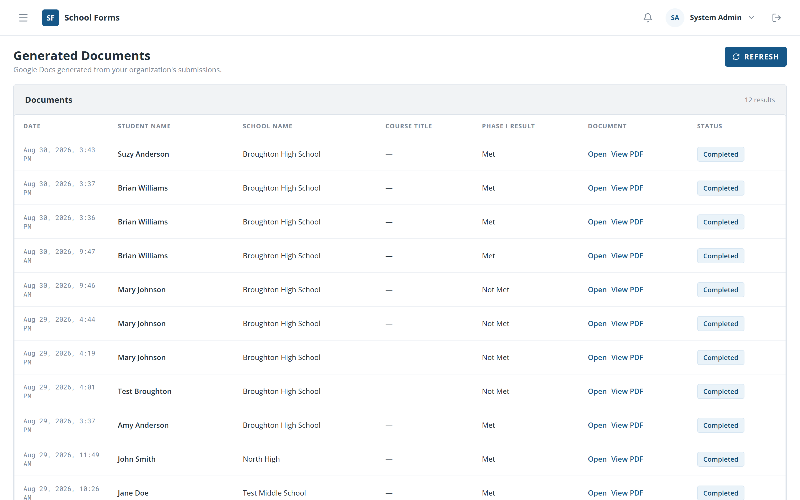
123
Figure 16 — Generated documents.
Refresh — reload, useful while a document is still being made.
Open opens the Google Doc; View PDF previews it here.
The Status column — Pending,
Completed or Failed. A failed document can be retried
from its submission.
This page appears in the menu only when Settings → Documents Link enables it
for your role.
8. Your account
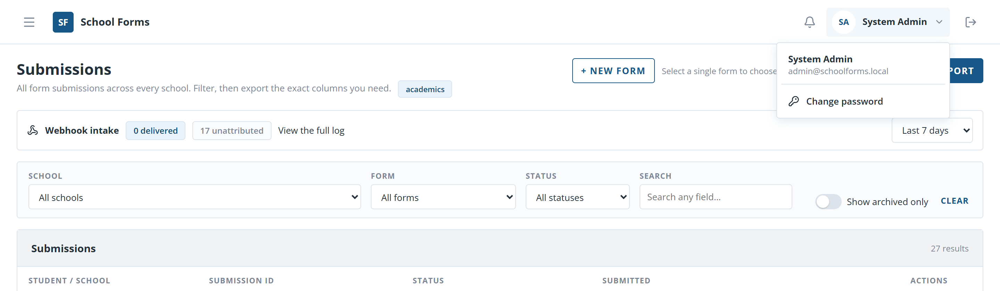
12
Figure 17 — The account menu.
Your name in the banner. Click it to open the menu.
Change password — you must enter your current password, then the new
one twice. It must be at least 8 characters.
Changing your password does not sign out other sessions
Copies of School Forms already open elsewhere stay signed in. If you think someone else is
using your account, change the password and review Settings → Users.
9. Reference
9.1 Status meanings
Status
Applies to
Meaning
Submitted
Submissions
Received, awaiting review.
In Review
Submissions
Someone is working on it.
Flagged
Submissions
Needs attention or follow-up.
Completed
Submissions
Reviewed and finished.
Draft
Forms
Not yet available to parents.
Published
Forms
Live and accepting submissions.
Archived
Forms
Retired. Kept, but no longer accepting.
Pending
Documents
Being generated.
Failed
Documents
Generation failed; can be retried.
9.2 Field types
Type
Use for
Text
A short single-line answer.
Text Area
A longer, multi-line answer.
Number
A numeric value.
Date
A calendar date.
Email
An email address.
Google Document
A Drive file id, shown as a link that opens the file.
 1
2
1
2